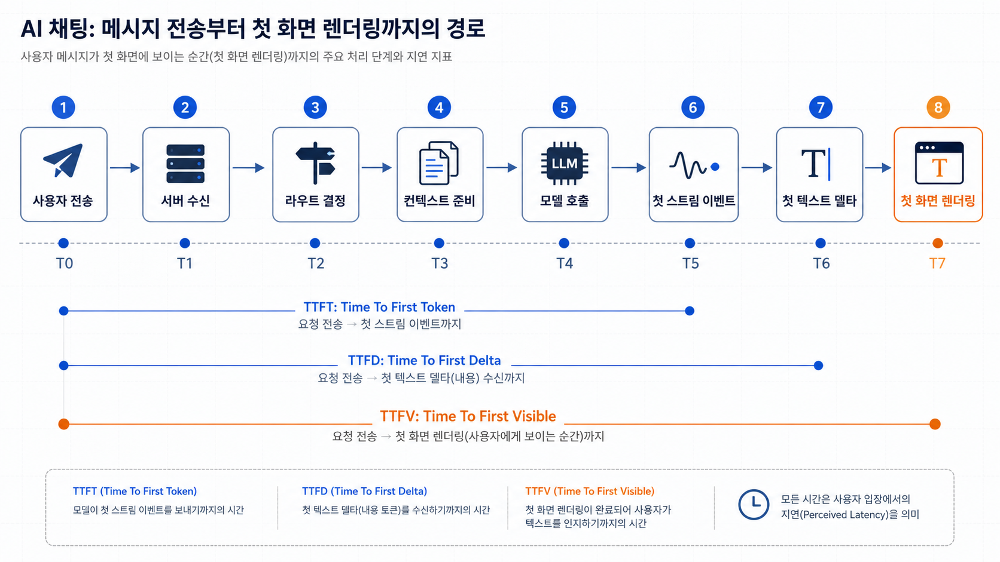
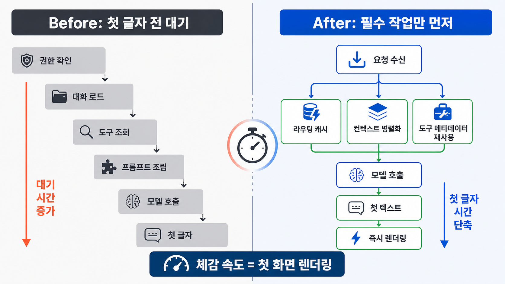

AI 채팅을 만들다 보면 이상한 순간을 만난다. 전체 답변은 그렇게 늦지 않은데, 사용자는 “느리다”고 느낀다. 답변이 한번 나오기 시작하면 빠르게 쏟아지는데, 첫 글자가 보이기 전까지의 정적이 길다.
처음에는 모델이 느린 문제라고 생각했다. 더 빠른 모델을 쓰거나, 프롬프트를 줄이거나, 스트리밍 옵션을 켜면 해결될 것 같았다. 그런데 실제로 뜯어보니 문제는 단순하지 않았다.
AI 채팅에서 사용자가 체감하는 속도는 전체 응답 완료 시간이 아니라 첫 글자가 화면에 나타나는 시간에 훨씬 민감했다.
이 글에서는 이 시간을 **TTFV(Time To First Visible Text, 첫 화면 렌더링까지의 시간)**라고 부르겠다. 일반적으로 많이 쓰는 TTFT(Time To First Token)가 모델이 첫 토큰을 내기까지의 시간을 본다면, TTFV는 사용자가 실제로 첫 글자를 보는 순간까지 포함한다.
이 글은 AI 채팅에서 첫 글자 지연을 줄이기 위해 문제를 어떻게 다시 정의했고, 어떤 경로를 나눠 봤고, 어떤 설계 원칙을 얻었는지 정리한 기록이다. 상세한 내부 로그나 수치는 제외하고, 공개 가능한 수준의 구조와 판단 기준 중심으로 썼다.
전체 응답 시간만 보면 문제를 놓친다
처음에 보고 있던 지표는 단순했다. 요청이 들어온 시간과 응답이 끝난 시간을 빼서 전체 소요 시간을 봤다.
그런데 이 방식으로는 사용자가 느끼는 답답함을 설명하기 어려웠다. 전체 응답 시간은 나쁘지 않은데도, 실제 화면에서는 한동안 아무 변화가 없었다. 반대로 첫 글자만 빨리 보이면 전체 답변이 조금 길어도 사용자는 덜 답답해했다.
그래서 관점을 바꿨다.
AI 채팅의 체감 속도는 “언제 끝났는가”보다 “언제 대화가 시작됐는가”에 가깝다.
여기서 말하는 대화의 시작은 서버가 응답을 만들기 시작한 시점이 아니다. 모델이 첫 토큰을 만든 시점도 아니다. 사용자의 화면에 실제 텍스트가 처음 보이는 시점이다.
이 기준을 잡고 나니 봐야 할 구간이 달라졌다.
- 사용자가 메시지를 보낸 뒤 서버가 요청을 받기까지
- 서버가 모델을 호출하기 전까지 준비하는 시간
- 모델이 첫 이벤트를 보내기까지
- 첫 이벤트가 실제 텍스트인지 여부
- 브라우저가 청크를 받은 뒤 화면에 그리기까지
이 중 하나라도 길어지면 사용자는 “AI가 늦다”고 느낀다.
첫 이벤트와 첫 글자는 다르다
스트리밍을 켜면 문제가 해결될 것처럼 보인다. 하지만 실제로는 “스트리밍을 하고 있다”와 “사용자가 스트리밍을 보고 있다” 사이에 차이가 있었다.
모델이나 서버 입장에서는 이미 이벤트를 보내고 있을 수 있다. 하지만 그 이벤트가 사용자에게 보이는 텍스트가 아닐 수 있다.
예를 들어 첫 이벤트가 이런 종류라면 화면은 여전히 비어 있다.
- 역할 정보
- 메타데이터
- 빈 델타
- 도구 사용 계획
- 내부 상태 이벤트
- 하트비트
사용자가 기다리는 것은 이벤트가 아니다. 사용자가 기다리는 것은 첫 글자다.
그래서 지표도 나눠야 했다.
- 첫 스트림 이벤트: 스트림에서 무언가 처음 도착한 시점
- 첫 텍스트 델타: 화면에 표시 가능한 텍스트 조각이 처음 도착한 시점
- 첫 화면 렌더링(TTFV): 사용자가 실제로 첫 글자를 본 시점
이 구분이 없으면 “서버는 빨리 보내고 있는데 왜 느리지?” 같은 애매한 상황이 계속 생긴다.

위 그림처럼 요청부터 화면 렌더링까지를 하나의 긴 선으로 보면 병목을 찾기 어렵다. 대신 구간을 나누면 어떤 개선이 체감 속도에 직접 영향을 주는지 보인다.
모델보다 앞단이 늦을 수 있다
첫 글자가 늦을 때 가장 먼저 의심한 것은 모델이었다. 하지만 실제 병목은 모델 호출 이전에도 있었다.
AI 채팅 요청이 들어오면 생각보다 많은 일이 모델 앞에서 일어난다.
- 사용자의 권한 확인
- 대화 히스토리 로드
- 어떤 라우트로 보낼지 결정
- 시스템 프롬프트 구성
- 사용 가능한 도구 목록 확인
- 컨텍스트 압축 또는 요약 불러오기
- 첨부파일이나 외부 데이터 준비
이 작업들이 모두 첫 글자 전에 직렬로 실행되면, 모델은 아직 시작도 못 했는데 사용자는 이미 기다리고 있다.
여기서 중요한 질문은 하나였다.
이 작업은 첫 글자 전에 반드시 끝나야 하는가?
모든 준비가 같은 우선순위를 갖지는 않는다. 답변 안전성이나 권한처럼 반드시 선행되어야 하는 작업이 있다. 반면 일부 메타데이터 계산, 부가 정보 로드, 무거운 도구 후보 탐색은 첫 글자 이후로 미루거나 병렬화할 수 있다.
개선 방향은 단순했다.
- 요청마다 반복되는 라우팅 정보는 캐시한다.
- 도구 목록처럼 자주 바뀌지 않는 정보는 매번 새로 계산하지 않는다.
- 대화 로드와 컨텍스트 준비 중 병렬화 가능한 작업을 분리한다.
- 모델 호출 전에 꼭 필요한 작업과 나중에 해도 되는 작업을 나눈다.
- 첫 텍스트 델타를 막는 장식적 처리나 과한 사전 판단을 줄인다.
이 과정에서 목표는 “전체 시스템을 무조건 빠르게 만들기”가 아니었다. 목표는 더 구체적이었다. 첫 글자 전에 남겨야 하는 일을 최소화하는 것이었다.
스트리밍은 “보이는 스트리밍”이어야 한다
서버에서 스트리밍을 켰다고 해서 사용자가 바로 체감하는 것은 아니다. 중간에 여러 층이 있다.
모델이 텍스트를 만든다. 서버가 그것을 스트림으로 흘린다. 프록시나 런타임이 버퍼링하지 않아야 한다. 브라우저가 청크를 받아야 한다. 클라이언트 파서가 텍스트 델타로 인식해야 한다. UI가 상태를 업데이트해야 한다. 마지막으로 화면에 실제 글자가 그려져야 한다.
이 중 하나라도 막히면 스트리밍은 하고 있지만 사용자는 보지 못한다.
특히 클라이언트 렌더링 단계에서 놓치기 쉬운 문제가 있었다.
- 첫 델타가 공백이나 개행이라 화면 변화가 없다.
- Markdown 렌더러가 일정 길이 이상을 기다린다.
- 상태 업데이트가 배치되어 첫 글자 렌더링이 늦어진다.
- 메시지 컨테이너가 생성되기 전까지 텍스트를 그리지 않는다.
- 로딩 인디케이터와 실제 텍스트 렌더링 전환이 늦다.
결국 스트리밍 UX에서 봐야 할 것은 서버 설정 하나가 아니라 전체 경로다.
모델이 보냄 ≠ 서버가 흘림 ≠ 브라우저가 받음 ≠ 사용자가 봄첫 글자 지연을 줄이려면 이 등식을 계속 기억해야 한다.
첫 반응과 완성된 답변을 분리한다
AI 에이전트형 채팅에서는 답변 전에 많은 일을 하고 싶어진다. 검색할지 판단하고, 도구를 고르고, 외부 데이터를 가져오고, 안전한 답변인지 확인하고, 출력 형식까지 정돈하고 싶다.
문제는 이 모든 일을 첫 글자 전에 끝내려 할 때 생긴다.
정확한 답변은 중요하다. 하지만 모든 정확성이 첫 글자 전에 필요한 것은 아니다. 어떤 작업은 답변을 시작한 뒤 이어서 처리해도 된다. 어떤 작업은 사용자가 보는 첫 문장 이후에 붙여도 된다. 어떤 작업은 아예 첫 응답 경로에서 빼야 한다.
그래서 설계를 두 층으로 나눴다.
- 첫 반응 경로: 사용자가 시스템이 응답을 시작했다고 느끼게 하는 최소 경로
- 완성 경로: 근거, 포맷, 추가 데이터, 후처리를 포함해 답변을 완성하는 경로
물론 의미 없는 “확인 중입니다” 같은 문구를 남발하면 오히려 신뢰가 떨어진다. 핵심은 가짜 진행 표시가 아니라, 실제로 먼저 말할 수 있는 내용을 빠르게 보여주는 것이다.
예를 들어 다음과 같은 방식이 가능하다.
- 질문의 의도를 먼저 짧게 재진술한다.
- 바로 답할 수 있는 핵심 판단을 먼저 말한다.
- 추가 확인이 필요한 부분은 이어서 처리한다.
- 무거운 도구 호출이 필요하면 그 이유를 짧게 알린다.
즉 첫 글자 지연 개선은 단순한 성능 튜닝이 아니라 대화 설계의 문제이기도 했다.
Before / After: 모든 준비를 기다리던 구조에서 첫 글자 우선 구조로
개선 전 구조는 물 흐르듯 자연스러워 보였지만, 사용자 입장에서는 불리했다.
요청 수신
→ 권한 확인
→ 대화 로드
→ 도구 조회
→ 프롬프트 조립
→ 모델 호출
→ 첫 글자각 단계는 필요해 보인다. 하지만 모두 첫 글자 전에 직렬로 놓이면 대기 시간이 길어진다.
개선 후에는 경로를 다시 나눴다.
요청 수신
→ 필수 검증
→ 캐시/병렬 준비
→ 모델 호출 앞당기기
→ 첫 텍스트 델타 즉시 전달
→ 화면에 먼저 렌더링
→ 나머지 처리 이어가기핵심은 모든 작업을 없애는 게 아니었다. 첫 글자 전에 반드시 필요한 작업만 남기는 것이었다.

이 관점으로 보면 최적화 대상도 달라진다. 모델을 바꾸는 것만이 답이 아니다. 라우팅 캐시, 컨텍스트 준비 병렬화, 스트림 flush, 클라이언트 첫 렌더링 경로 같은 작은 개선들이 체감 속도를 크게 바꿀 수 있다.
평균보다 꼬리를 봐야 한다
첫 글자 지연은 평균만 보면 위험하다. 대부분의 요청은 괜찮아도 일부 요청에서 첫 글자가 매우 늦으면 사용자는 시스템을 불안정하게 느낀다.
그래서 평균 완료 시간보다 더 중요하게 본 것은 tail latency였다.
- 보통 요청에서 첫 글자가 얼마나 빨리 보이는가
- 느린 요청에서 첫 글자가 얼마나 늦어지는가
- 모델 호출 전 준비 시간이 길어지는 케이스는 무엇인가
- 첫 텍스트 델타를 받았는데 렌더링이 늦는 케이스는 무엇인가
- 스트리밍 이벤트는 왔지만 표시 가능한 텍스트가 늦는 케이스는 무엇인가
여기서도 공개 글에 상세 로그를 넣을 필요는 없다. 중요한 것은 수치 자체보다 관점이다.
전체 완료 시간 하나로 보던 문제를 첫 글자까지의 경로로 나누면, 개선할 수 있는 지점이 훨씬 명확해진다.
이 작업에서 얻은 원칙
이번 개선을 통해 얻은 원칙은 다음과 같다.
1. AI 채팅의 속도는 모델 속도만이 아니다
모델은 중요한 요소지만 전부는 아니다. 사용자 요청이 모델까지 도달하기 전, 모델 출력이 사용자 화면에 그려지기 전에도 많은 지연이 생긴다.
2. 첫 이벤트가 아니라 첫 텍스트를 봐야 한다
스트림 이벤트가 왔다고 사용자가 본 것은 아니다. 사용자에게 의미 있는 기준은 표시 가능한 첫 텍스트다.
3. 첫 글자 전 작업을 줄이는 것이 핵심이다
권한, 안전성, 필수 컨텍스트처럼 반드시 필요한 작업은 남겨야 한다. 하지만 그 외 작업은 캐시하거나 병렬화하거나 첫 응답 이후로 미룰 수 있다.
4. 스트리밍은 서버 기능이 아니라 end-to-end UX다
서버에서 streaming 옵션을 켜는 것만으로는 부족하다. 프록시, 파서, 상태 업데이트, 렌더링까지 이어지는 전체 경로가 실제 스트리밍 UX를 만든다.
5. p95 체감 지연을 봐야 한다
평균이 좋아도 느린 꼬리가 길면 사용자는 불안정하다고 느낀다. AI 채팅에서는 특히 첫 글자 지연의 꼬리를 줄이는 것이 중요하다.
마무리
AI 채팅에서 첫 글자가 늦게 나오는 문제는 처음에는 단순한 모델 속도 문제처럼 보였다. 하지만 실제로는 요청 처리, 라우팅, 컨텍스트 준비, 스트리밍 전달, 클라이언트 렌더링이 모두 얽힌 문제였다.
가장 큰 변화는 측정 기준을 바꾼 것이었다.
전체 응답 시간이 아니라, 사용자가 첫 글자를 보기까지의 시간을 기준으로 보자 병목이 달라 보였다. 첫 이벤트와 첫 텍스트를 구분하자 스트리밍의 빈틈이 보였다. 첫 글자 전에 꼭 필요한 작업만 남기자 개선 방향이 선명해졌다.
AI 채팅에서 사용자가 느끼는 속도는 “답변이 언제 끝났는가”보다 “언제부터 나와 대화가 시작됐는가”에 가깝다. 그래서 첫 글자는 작아 보이지만, 실제로는 AI 제품의 신뢰감을 결정하는 중요한 UX 경계다.